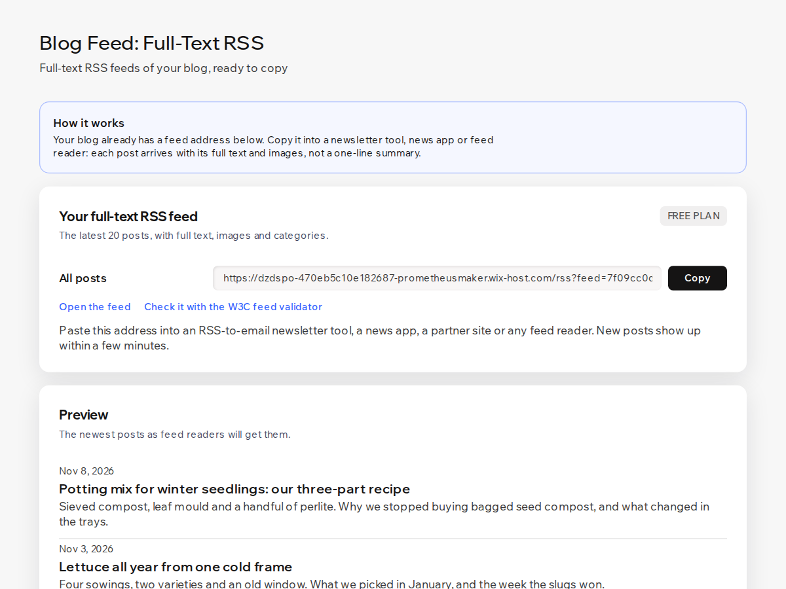

Blog Feed
Full-text RSS feeds of your blog for newsletters
- Full post text and images in every feed item
- Feed address ready to copy, zero setup
- Preview and W3C validator link in the dashboard
- A feed per category and tag (Premium)

What it does
Your blog's built-in feed sends a one-line summary of each post and stops at 20 posts. Newsletter tools that turn new posts into emails, news apps and partner sites then show readers a teaser instead of the article.
Blog Feed gives your blog a full-text RSS feed with zero setup. Open the app after you add it and the feed address is already there, with a copy button. Each post arrives with its complete text, headings, links and images (absolute links, so they load in email and in readers), plus the cover image, publish date and categories. The dashboard also shows a preview of the newest posts and a link to check the feed in the W3C validator.
The free plan covers the latest 20 posts in one feed, full text included, which is enough for most RSS-to-email newsletters.
Premium adds a separate feed for every category and every tag, up to 100 posts per feed, Atom and JSON Feed formats, an excerpt-only option, a "Read more on your site" link after each post and UTM tags so your analytics can count visits from the feed.
The feed reads only your published posts, categories and tags. It stores nothing and does not change your blog. New posts show up in the feed within a few minutes.
Price
Free
- Full-text RSS feed of the latest 20 posts
- Images, cover image and categories
- Copy button, preview, validator link
Premium
$4/month, yearly with a discount
- A feed per category and per tag
- Up to 100 posts per feed
- Atom and JSON Feed formats
- Excerpt option, "Read more" link, UTM tags